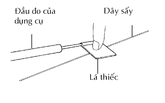
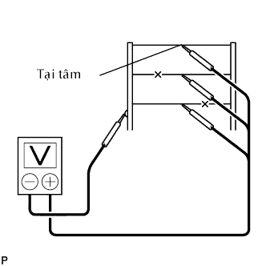
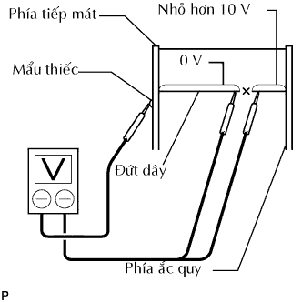

DÂY SẤY KÍNH > KIỂM TRA TRÊN XE |
| 1. KIỂM TRA KÍNH CỬA HẬU (DÂY SẤY) |
|  |
Bật khoá điện ON.
Bật công tắc sưởi kính ON.
|   |
Đo điện áp tại tâm của từng dây sấy như được chỉ ra trên hình vẽ.
| Điều kiện tiêu chuẩn | Điều kiện |
| Xấp xỉ 5 V | Dây điện bị đứt |
| Xấp xỉ 10 hay 0 V | Dây bị đứt |
Đặt đầu dương của vôn kế vào dây sấy bên phía ắc quy.
Đặt đầu âm của vôn kế vào dây điện phía nối mát.
Trượt đầu dương (+) từ phía ắc quy đến phía nối mát.
Tại điểm mà điện áp sụt xuống từ xấp xỉ 10 V đến 0 V đó là điểm dây sấy bị đứt.